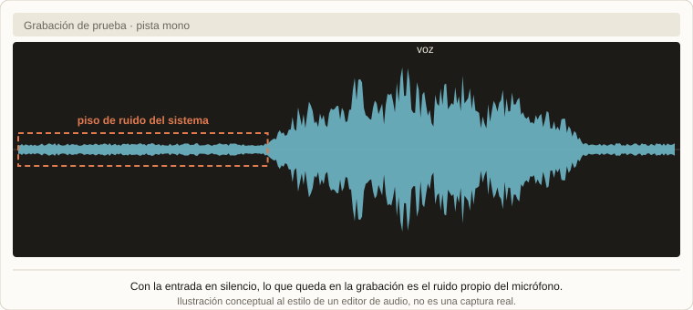

Audio · Raspberry Pi Pico 2 · USB
Un micrófono USB DIY con Raspberry Pi Pico 2
Este proyecto nació de un video: "Building a quality USB-C microphone", de DIY Perks. Me inspiré en usar la misma cápsula de micrófono, pero busqué mi propia implementación: un preamplificador AD620, un conversor PCM1808 y una Raspberry Pi Pico 2. El resultado es un micrófono que se enchufa a cualquier computadora y funciona sin instalar nada.
 Raspberry Pi Pico 2
Raspberry Pi Pico 2 TinyUSB
TinyUSB Audacity
AudacityLa cadena de señal
Un micrófono de este tipo hace tres cosas en orden: convierte el sonido en una tensión muy pequeña, la amplifica sin agregarle ruido y la digitaliza. En este diseño:

| Etapa | Para qué sirve |
|---|---|
| AD620 | Es un amplificador de instrumentación: amplifica la diferencia entre sus dos entradas, rechaza el ruido que les llega a las dos por igual y se ajusta con una sola resistencia. Es justo lo que hace falta para una señal tan chica. |
| PCM1808 | Es un conversor analógico-digital pensado para audio. Entrega el sonido ya digitalizado por I²S, el protocolo estándar para pasar audio entre chips. |
| Raspberry Pi Pico 2 | Recibe ese audio y lo manda por USB. |
Por qué esta combinación
La parte más delicada de un micrófono es la analógica, porque cualquier ruido que se cuele antes de digitalizar ya no se puede sacar. Por eso el AD620 es la primera etapa y el PCM1808 digitaliza enseguida después.
Usar el PCM1808 también simplifica la implementación, porque la Pico 2 tiene soporte para I²S: se conectan directamente y la placa solo tiene que mover datos, sin ocuparse de la conversión.
El software: un micrófono que se reconoce solo
Para que el dispositivo funcione en cualquier computadora usé la librería TinyUSB, que permite que la Pico 2 se presente como un dispositivo USB de audio estándar. Los sistemas operativos ya traen el controlador para esa clase de dispositivos, así que el micrófono es plug and play: se conecta y aparece como una entrada de audio más, sin instalar nada. Con eso, el sistema quedó funcional de punta a punta.
Calibración con Audacity
Una vez andando, hacía falta saber qué tan limpio era. Con Audacity grabé el micrófono y analicé las grabaciones para ubicar dónde estaba el ruido del sistema. La idea es simple: con la entrada en silencio, lo que queda en la grabación es el piso de ruido propio del micrófono, y de ahí se ve qué parte hay que mejorar.
